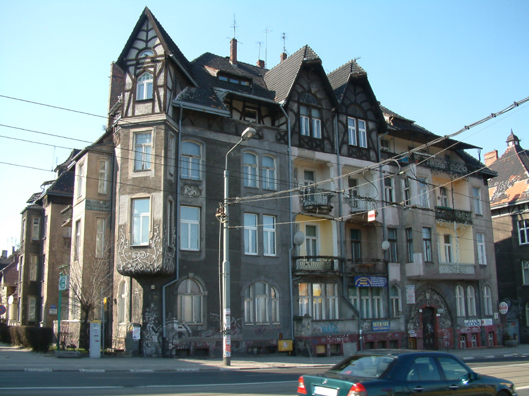
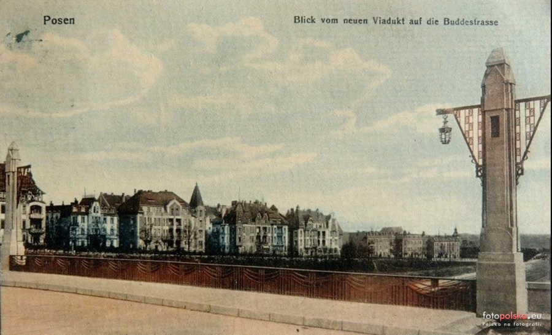

Часам к трём пополудни дом опустел. Тётка Лиля пошла куда-то по делам, Мамерту пора было возвращаться в клинику, чтобы проверить, как чувствуют себя две оперированные утром щитовидные железы, а Тося давала уроки игры на фортепиано аж до восьми вечера.
Мамерчаток оставили под непрофессиональную опеку Аниэлы. Томчо и Ромча были не против. Кламчуха хоть и находилась под крышей их дома лишь неполных двадцать часов, уже стала вполне домашней и своей. И кроме того - что просто бросалось детям в глаза - Кламчуха до сих пор всегда принимала их сторону. А это невозможно игнорировать.
Поначалу не отступали от Аниэлы ни на шаг. Вкратце однако поняли что Кламчуха не намерена сейчас ни рассказывать им сказок, ни читать вслух из энциклопедии, ни играть в прятки. Сидела только при кухонном столе, подперев руками подбородок и смотрела задумчиво куда-то вдаль.
Разочарованные Мамерчата поэтому отправились в свою комнату, чтобы в тиши так хорошо способствующей послеобеденному пищеварению предаться полностью игре с кубиками Лего. Строя замысловатые автомобильчики, трактора, самолёты, комнатки для кукол, домики и стаи квадратных овечек, Томчо и Ромча позабыли о божьем свете. Даже ссориться им не хотелось.
В это время Аниэла шлифовала свой План за кухонным столом. Намеревалась пойти с Мамерчатками до замдиректорши и вручив ей цветы, представить какую-нибудь удобоваримую историю, которая яснейшим образом очистила бы Тосю от подозрений в заработке при помощи детей. В деталях План был ещё немного не проработан, но достаточно было четверти часа на размышления чтобы у Аниэлы сформировалась основная концепция роли.
Постановила представиться Тосиной работницей, няней для детей.
Да, помощь с детьми. Девушка из провинции. Недоучка, примитивная, ленивая. Это она предложила бедняжкам устроить заработок на песочнице. Деньги велела отдавать ей, о чем, ясное дело, Тося не имела понятия.
Таков был принципиальный скелет плана. Импровизирование подробностей оставила себе Аниэла на последний момент, уверенная в своей молниеносной находчивости и неограниченной фантазии. Приготовления к роли следовало начать с лёгкой проработки имиджа.
Встала перед зеркалом в ванной. Девица из провинции. Ленивая. Должна быть плохо причёсана, неумело накрашена и как будто немного немыта.
Аниэла стащила резинку стягивающую волосы в хвост и начала своё преображение с прически. Уложила волосы в высокую башенку, одну прядь оставила свисающей наискось через лоб. Сзади закрутила локон и зафиксировала Тосиной заколкой, найденной в шкафчике ванной. Жесткая конструкция нао лбом, поблескивающая слоем фиксирующего лака, придала её лицу выражение отяжелелости и как бы простодушности. Аниэла накрасила губы Тосиной помадой оранжеватого оттенка и прошлась по коже блекло-кремовой пудрой. Косметика Тоси, предназначенная явно для блондинистой особы со светлой кожей на Аниэле, загорелой брюнетке, выглядела грубо. Зато требуемый эффект был достигнут.
Из платяного шкафа в комнате Мамертов выволокла Аниэла забытую где-то в углу, давно уж немодную блузку с ярким кружевным рюшем. Блузка, белая во времена своего расцвета, теперь же припылённая и пожелтевшая, помнила ещё студенческие годы своей владелицы. В сочетании с ярко-голубыми штанами из замши производила впечатление как от скрежета ножа по стеклу. Что же до обуви, Аниэла осталась при Тосиных туфлях на высоком каблуке.
Возможно все эти приготовления были не нужны и достаточно было бы посетить замдиректора не меня внешнего вида. Но в характере Аниэлы лежала склонность к преувеличениям и впаданию в эйфорию при одновременном любви к перфекционизму. Роль домопомощницы должна была "застегнута до последней пуговицы". Кроме того Аниэлу здорово все это веселило.
– Кламчухо... - протянула Ромча с благоговением, - как ты красиво выглядишь...
Девочка стояла уже довольно долго перед Аниэлой и заложивши ручки за спину присматривалась с восторгом к её
манипуляциям с туалетом и гримом. Ромча вообще обнаружиила раннюю тягу к женским штучкам такого типа. "Ох уж этот
вечный женский пол" - говорил испуганный отец, глядя как его доченька с превеликим удовольствием наносит себе румяна
лаком для ногтей.
– Дайте жевательной резинки, - сказала рассеянно Аниэла, пристраивая на носу свои очки и приближая лицо к зеркалу на дверце шкафа. - Обязательно нужно жевать. - Развернула из обёртки поданного ей "Дональда" и запустила в размалёванный рот. - Они жуют таким особым образом, - бормотала про себя, - немного бездумно и немного набожно. О, так!
– Какие Они? - хотела знать Ромча.
– Тихо, моя деточка. Свитерок надень. Пойдём, - приказала Аниэла и зачавкала профессионально.
Спрошенные, где тут можно купить цветы, Мамерчата проводили Кламчуху до улицы Домбровского, тут же за Театральным мостом. По правой стороне, между "коммерческим" мясным магазином и Новым Театром под руководством Изабелы Чивиньскей уместился небольшая цветочная лавкочка, где можно было достать, несмотря на время года, благоприятствующее цветению, в основном тисовые деревца в горшках и венки из бессмертников. Из срезанных цветов были только маленькие привядшие гвоздики. А впрочем как раз что-то в этом духе и требовалось придирчивой к мелочам Аниэле. Купила две гвоздики и спросила как пройти на улицу Затишье.
Прощавщица окинула взглядом её причёску и макияж и с превосходством жительницы города - столицы всего воеводства -
поделилась информацией касательно улицы Затишье. Она шла параллельно улице Красиньскего.
– Как выйдешь из магазина, то иди направо, - объясняла она медленно и с расстановкой, что для Аниэлы было явным
подтверждением её актёрских талантов. Сделала туповатое выражение на лице и кивала головой, создавая впечатление,
что усваивает слова продавщицы с наивысшим усилием.
– Направо, - повторила она.
– Да. Сразу там увидишь очередь в коммерческий. Там выбросили котлеты на кости.
[какая прелесть, у нас тоже говорили "выбросили", когда что-то хорошее внезапно появлялось в продаже (и сразу собиралась очередь)]
– Как дойдёшь до угла с Мицкевича, снова сверни направо.
– Направо, - повторила Аниэла, моргая ресницами.
– Пойдёшь по Мицкевича вниз и минешь Красиньскего. И потом снова свернёшь.
– Направо! - догадалась Аниэла.
– Направо. И это будет Затишье. Маленькая улочка. На углу там больница.
– Большое спасибо.
– Не за что. Эге, а ещё там были ребрышки, - припомнила продавщица, - Только их сразу разобрали.
– Ох, жалость, - поддакнула Аниэла из чистой вежливости. - Паравда, большое спасибо. Идёмте, дети, -
вышла из магазина и повернула направо. Информация полученная от продавщицы оказалась точной. За исключением данных
о котлетах. Очередь перед коммерческим расходилась в разные стороны бурча что всё уже закончилось.
Без труда Аниэла нашла Затишье. Была то действительно изящная улица, тихо бегущая меж небольших полных таинственной красоты домов. Построенные в основном в начале века, выглядели как будто вынутые из ранних фильмов Хичкока. Улочка была без проезжей части и просто заканчивалась на тротуаре какой-то бегущей поперёк артерии, полной мчащихся машин и волочащихся трамваев. Голубая будка Тото-Лотереи торчала посреди тротуара, который вползал в узкий тихий перешеек между домами, как раз украшенный табличкой "ул. Затишье".
Вся улица Затишье имела лишь несколько домов, не считая пристроенного к ней боком госпиталя имени Францишека Рашея. Нетрудно было пройтись от ворот к воротам, и отыскать в списках жильцов фамилию замдиректорши. По счастью такая нашлась только у одного из входов, находящегося как раз в том перешейке налево от киоска. В подъезде было мрачно, Аниэла разглядела только бегущие куда-то вверх ступени, за которыми на высоте лестничной площадки, лился голубой свет из кобальтовых стёкол в дверях, выходящих на тот шумный проспект. Дом был с проходным подъездом.
Из списка жильцов висящего на стене обок лестницы следовало, что "упр. И. Домбковна" проживает в квартире номер два.
Дом о котором идёт речь, с фасадной стороны выглядит так - он существует до сих пор.

Двери квартиры номер два, окрашенные бронзовой краской, усеяны были цветными пятнами света, проходящего через витражное окно в противоположной стене. Сбоку к ним примыкали идентичные двери квартиры номер три, создавая тупой угол. Повыше дверей виднелись в стене полуовальные окошки, также забранные витражиками. Очень все это выглядело красиво и Аниэла засмотрелась вверх, чуть не забыва зачем они сюда пришли. Наконец опомнилась, мимолётно взглянула на две таблички на дверях квартиры номер два, и убедившись что на одной из них выгравирована фамилия замдиректора, позвонила.
– Томчу! Ромчу! - шепнула она, - Мы идём извиняться перед гидрой. Ваше дело слушать, ничего не говорить и ничему не удивляться. Ясно?
Заинтригованные Мамерчатки послушно покивали головами, а Аниэла повторно нажала кнопку звонка, чувствуя себя немножечко как бы перед премьерой.
За дверями раздалось топанье и вскоре на пороге появилась толстая светловолосая семилетняя девочка.
– Привет, Мажена, - сказали Мамерчата в один голос.
– Привет.
– Мама дома?
– Ыхы.
– Тогда заходим, - рек Томчо и втолкнул внезапно занервничавшую Аниэлу в прихожую, оклеенную цветными обоями. Было
тут тепло, светло и богато. Откуда-то наплывал вкусный запах чего-то жареного.
– Что там, Маженко? - раздался с левой стороны голос хозяйки дома. Маженка занята была показыванием языка Ромче.
Ромча занята была полным игнорированием Маженки. Томчо тихо сплюнул на пушистый ковёр на полу.
Аниэла оставила всю троицу предаваться их невинным играм и двинулась на запах жаркого.
Внутренность кухни представляла гордое свидетельство любви к порядку и финансовых возможностей замдиректорши. Было тут болезненно чисто и неправдоподобно "певексово". [помним, Pewex, сеть магазинов, торгующих импортными вещами за валюту] Сама замдиректорша - большая, принципиальная и властная - находилась при блестящей кухоньке, где наряженная в фартучек жарила что-то на серебристой сковороде. Повернула к вошедшей лицо и выслала из-под тяжёлых век тяжёлый взгляд. Результат осмотра не склонил её к вежливости.
– В чем дело, - спросила, потрясая сковородой.
– День добрый, - начала Аниэла своё выступление.
– Ден добрый. Слушаю? - Аниэла замедлила свои жевательные движения.
– Пришла извиниться, - буркнула она.
– Мы тоже, - отозвались из-за её плеч Мамерчатки и сразу умолкли, поскольку Аниэла замахала им рукой.
Хозяйка дома заявила, что ничего не понимает и выключила газ. Когда подняла голову, перед её носом качались грустно
две гвоздики.
– Прошу, прошу, - подбадривала Аниэла, всучивая ей букет и жуя жвачку.
Замдиректор Домбковна машинально приняла связку. Для неё это был привычный ритуал. Замдиректор так часто принимала букеты, что у неё это уже было прямо в крови, так же как подписывание документов, заседание на совещаниях и властные разговоры по телефону. Даже не знала что при случае приёма цветов на её лицо вплывает оптимистичная, искусственная подбадривающая улыбка. Только когда отложила цветы на край хромированной раковины, позволила наконец своему лицу вернуться к нормальному выражению.
Аниэла с восторгом наблюдала эту бессознательную мимическую игру. Если бы ей когда-то пришлось играть деловую
женщину, теперь уж знала из какого источника черпать вдохновение полной горстью.
– Не думала, что они возьмут у Маженки, - объяснила извиняющимся тоном.
– Что возьмут у Маженки? - забеспокоилась хозяйка, - И ты вообще кто такая?
Аниэла была в трансе, набрала воздуху и начала:
– Звать меня Францишка Выробек. Работаю у пани Ковалик. Детей смотрю, готовлю, убираюсь.
– Ну и что?
– Ну и пани Коваликова меня выгнала.
– Да? - по лицу замдиректорши промелькнула тень заинтересованности. - А за что?
– За то, сегодняшнее. Но откуда я могла знать что они возьмут от паниной Маженки. Что мне было делать? Нужны были
деньги.
– Хм, - буркнула замдиректор, окидывая внимательным взглядом всю фигуру предполагаемой Францишки Выробек. Пауза
позволила Аниэле спохватиться что она немного перестаралась.
– Потому что я собралась учиться в техникуме. Если бы детки зарабатывали по паре злотых в день, у меня б
сошёлся баланс, - сказала тупо, ослабляя немного выражение лица. Придала взгляду оловянную тяжесть и все время
не прекращала жевать резинку, поскольку эта мера стирала с её лица все следы интеллигентности. - Пани Коваликовна
платит мало. Бедняга. Работает много, зарабатывает мало. У нас над такими все смеются.
"У нас в городе тоже" - невольно выдала мина замдиректорши. Её взгляд задержался на искренне глупой физиономии
девушки.
– Так это была твоя идея, хм?
– Конечно, о том и дело.
– И пани Ковалик ничего об этом не знала?
– Не-е-е! - фыркнула Аниэла. С каждой минутой чувствовала себя все лучше в своей новой шкуре. - Пани сказала что
едва со стыда не умерла из-за меня. Кем, говорит, ты меня выставила перед нашей пани замдиректор. И выгнала.
– А... сколько ты у неё зарабатывала, моя Франю?
– Пятьсот злотых, - сообщила Аниэла беспечно, не имея даже малейшего понятия о ставках принятых в этой сфере
занятости. Сумма в пятьсот злотых пришла ей на ум попросту по ассоциации со стоимостью аренды у тётки Лили.
Замдиректорша выглядела очень обрадованной этой информацией.
– А что входило в твои обязанности? - спросила она тепло.
– Что, извините? - запнулась Аниэла, - Ну, я ж говорю... Уборка, готовка, опека над детьми...
– И так каждый день? - спросила замдиректор с недоверием, так что Аниэла поспешила исправиться:
– Не, через день.
– А жильё у тебя есть? - Аниэла с искренной гордостью ответила, что да.
– Может, кофейку?
– Не, - ответила Аниэла, улыбаясь фольклорно, - Я уж побегу, - оглянулась на Мамерчат, которые были близки к тому
чтобы начать драку с Маженкой. - Поздно уже, - Считала свою сегодняшнюю роль великолепной. Замдиректоршу удалось
убедить в полной невиновности Тоси, а значит выступление можно было заканчивать.
– Посиди ещё, Франю, хочу с тобой поговорить, - начала замдиректор.
В этот момент двери в боковой стене внезапно открылись впуская на кухню сноп солнечного блеска и показывая внутренность большой светлой комнаты. Послышались также звуки альтового саксофона в исполнении стереофонического проигрывателя высокого класса. В кухню вошла стройная блондиночка в джинсах и бадлоне, а за ней высокий парень.
– Мамо, - сказал баритоном, пока Аниэла рассматривала пресимпатичнейше скроенные джинсы на ногах блондинки, - Цеся мечтает о чае.
Тот голос!!!
Аниэлу прошила холодная дрожь. Подняла очи и с ужасным внутренним потрясением узрела перед собой Павелка.
Первой её мыслью было что то должно быть сон. Потом пришла к выводу что если это стечение обстоятельств, то дурной и неправдоподобный. Павелек не имел права оказаться на кухне замдиректорши. Павелек жил ведь на Рузвельта 5. Павелек не мог говорить "мамо" по отношению к особе по фамилии Домбковна поскольку сам он был Новацкий!
Бедняжка стояла как гипсовая статуэтка с раскрытым ртом и оцепенением в прикрытых стёклами глазах. А в это время
замдиректорша болтала с блондинкой, расспрашивая её неведомо зачем про Гамлета:
– Как там ваш Гамлет, Цесю?
– Выучила уже текст наизусть, - ответила девушка в джинсах.
Аниэла посмотрела на неё с внезапной ненавистью. Ещё какая-то Цеся. Рыжая блондинка с зелёными глазами! Отвратительно! Ну не, что это за кошмарная история, можно рехнуться. Павелек! Павелек, занят наполнением чайника, его красивые глаза оттенка, ничуть не изменившегося за те три месяца, следят за струеё воды, но как только чайник наполнится, Павел повернётся и увидит перед собой свою Аниэлу, ту самую по которой тосковал, которой писал письма...
"Раны Исусовы!!!" - подумала Аниэла с ужасом. Павелек повернётся и увидит страшилу.
Пришла сюда нарочито изуродованная, одетая как можно кошмарнее и к тому же представляя прислугу по дому! Павел может подумать только одно: что Аниэла гоняется за ним неприлично, даже опускаясь до безобразного вторжения в его дом. О судьба, судьбинушка. Запуталась в ужасной ситуации и только чудо могло бы теперь ей помочь.
Все эти мысли пролетали в голове бедной Аниэлы в то время как её ноги, пятясь назад и на цыпочках, несли её тихо в сторону выхода. Замдиректорша, отвернувшись на три четверти что-то говорила той омерзительной зеленоокой, Павелек справился уж с наливанием воды и теперь поджигал газ, весело посвистывая. Без помех Аниэла добралась до двери прихожей. Была уж мокрёхонька от пота. Осторожно выставила назад левую ногу в Тосиной туфельке. Туфелька хлопнула, запнулся на краю порога и заставил ногу бедной девушки подвернуться. С грохотом рухнула она на пол а все присутствующие на кухне посмотрели в сторону прихожей с испугом.
– Кламчуха навернулась, - констатировал из прихожей милый голосок Томчо, и медленно поднимающаяся Аниэла аж ослабела от благодарности, что замечательный мальчишка не назвал её по имени. Поскольку Павелек явно её не узнавал. Его наимилейшее лицо с прямым римским носом и благородным лбом, с очами полными разума и блеска, выражало чистейшее безразличие.
– Франю, с тобой ничего не случилось? - спросила его мать и взмахом руки пригласила ближе "домопомощницу". Взгляд Павелка скользнул лениво по её лицу, после чего выразил лёгкое нежелание и соскользнул с девушки как с кресла или вешалки для одежды. Какая-то там Франя в очках и жуткой блузе, причёсанная как лакированный ишак, дурно накрашенная и скрючившаяся на корточках у двери - могла быть только кем-то в духе уборщицы - и как таковая не заслуживала никакого внимания.
– Что у нас на полдник? - спросил он.
– Ах, что-то вкусненькое, - ответила его мать. - Сегодня заглядывал пан Геньо, привёз колбасы и шинки из того
вепря, которого он застрелил при тебе. Франю, прошу сюда, Павелку, поздоровайся с Франей.
Павел кивнул надменно своей красивой головой и отвернулся к своей зеленоокой.
– Пойдём, чай скоро будет, - сказал он. Оба исчезли в боковой комнате и Аниэла была так поглощена разглядыванием
их через щёлку дверей, что не почти не обратила внимания на то, что мать Павла предлагает ей работу в качестве
"помощи по дому".
– Не хочу, - ответила, напрягая взгляд.
– Подумай ещё, как бы там ни было, это пятьсот злотых! И не нужно присматривать за детьми. И даже готовить, -
искушала её замдиректорша.
– Слушаю? – спросила твёрдо Аниэла, перенося на мать Павелка неподвижный взгляд. "Если увижу что целуются, -
подумала она, - войду и поставлю ей фингал под её зелёный глаз."
– Ну хорошо, пусть будет шестьсот, - быстро согласилась замдиректорша, неохотно признавая в душе что соплячка
умеет торговаться.
Из-за прикрытой двери донёсся взрыв смеха.
– А Дануська звонила вчера, - послышался любимый голос, - Но ты знаешь её шутки. Хотела прийти с утра - и ничего.
Замдиректор посмотрела с внезапным вниманием на сидящую напротив неё девицу. Во Францишке наступил как будто некий перелом. Покраснела, очки как бы затуманились, губы приобрели выражение уверенное и упрямое.
– Работать здесь как "помощь по дому"? - сказала медленно и задумчиво. - А добре. Добре. Отличная идея.
– Снова врёшь, Кламчухо, - в упор заявил Томчо, топая за Аниэлой по деревянной скрипучей лестнице. Кламчуха молчала .
– Я подумал, - добавил мальчишка, - что если встречу когда-нибудь настоящую Кламчуху, то она мне не понравится. А ты мне нравишься.
– Серьёзно? - пробормотала Аниэла сдавленным голосом.
– Серьёзно. Здорово этой гидре лапши на уши накидала.
– Пипи. - вмешалась Ромча.
– Кламчухо, ей надо, знаешь чего. Пойдём до дому. Скорее. - спустились на нижнюю площадку лестницы.
– Туда будет ближе, - сориентировался Томчо, поглядев через голубые стёкла парадной двери. - Тут выход на Рузвельта.
Выход на Рузвельта!!!
Так выглядела улица Рузвельта, если смотреть с моста, в начале 20 века, когда Познань был ещё немецким городом Позен - дома сохранились и до сих пор.

Аниэла вышла через дверь с голубым витражом. Воистину. Улица Рузвельта собственно и была той оживлённой артерией с трамваями. Дом имел как раз номер пять, все совпало. Проходной подъезд. Павелек жил одновременно на улице Рузвельта и на Затишье.
Промашка была комичной.
С другой однако стороны - ситуация не была лишена полезных возможностей. "Так, так, наверняка" - думала Аниэла, шагая в сумерках вверх по улице Рузвельта, в сторону Театрального моста, и чувствуя в каждой руке тяжесть волочащихся позади детскишек - поскольку Мамерчатки во все глаза глядели на мчащийся слева, по железнодорожным путям к станции, товарный поезд - как будто первый раз в жизни видели подобное чудо техники. "На самом деле даже удачно сложилось. Смогу приходить к нему, видеть через день, держать руку на пульсе событий и - хихи - возможно, отпугнуть и зеленоокую, и ту другую, Дануську". Ухватила сильнее тёплые лапки детей и перешла через шумный, опасный перекресток - с облегчением оказавшись около киоска "Рух".
"Трудновато будет. Поработаю месяц а потом брошу и объявлюсь как Аниэла. Нужно будет хорошенько продумать роль Францишки Выробек - видимо сыграно было недурно, раз и Павелек не узнал..."
Ну, это было, возможно, слабейшим местом во всей истории.
Должен был её узнать. Должен был рассмотреть дорогие черты под слоями диковатого макияжа. Должен был ощутить тепло взгляда из-под очков. В которых, правда, никогда раньше Аниэлу не видел. Должен был не обратить внимания на её наряд, причёску и вообще, сразу же подойти к ней и заключить в объятья. Ничего из этого не случилось и то сильно беспокоило.
Но Аниэла не была из тех кто беспокоится понапрасну. Будь что будет - утешала себя с типичным своим оптимистичным фатализмом. При входе в Театралку подумывала уже, что перст Судьбы и в этом случае направил её туда, куда надлежит, и в ту пору, в которую требуется. Если существуют какие-то сомнения до силы и постоянства чувств Павелка, поистине трудно мечтать о более удобной ситуации, в которой можно было бы подвергнуть его проверке.
Ох! Видеть его каждый раз в домашних тапочках! Подавать ему чай и запекать яблоки в тесте. Слушать его разговоры и присматривать за его зеленоокими гостьями! И... и взаправду любопытно, что он напишет ей в следующем письме!!!
Катажине Курке, Косцюшки 44 кв 1, 84-360 Леба
Познань, 22 августа 77
Любимая Касю, яростно необходима Твоя помощь!
Обязательно, обязательно, несмотря ни на что, Ты мне должна пересылать все письма, какие придут для меня от Павелка!
Если не удастся Тебе перехватить почтальона, а должно Тебе это быть несложно (он ведь всегда заходит сначала к Вам
на первый этаж), то скажи моему Папе, что я Тебя о том попросила, но много ему не говори, а то будет кричать. Сама
понимаю.
Вообще в случае необходимости напишу ему сама. Впрочем не нужно Тебе объяснять, что хотелось бы, чтобы о тех письмах
никто не знал.
Я буду тем временем писать письма Павлу, и эти мои письма отправлять Тебе в большом конверте. Ты попросту вынешь
обычный конверт из того большого и отнесёшь на почту в Лебе. Первое такое письмо я уже написала - там все есть,
адрес, марка, наклейка "экспресс" - т.к. эти письма надо отправлять срочно. Письма для меня от Павелка тоже высылай
"экспрессом", марки для этой цели прилагаю.
Всё тебе расскажу, как увидимся, ну или опишу в письме, потому что, верь мне, подобной истории в жизни не случалось!
Умоляю Тебя, не напутай с этими письмами. От этого всё зависит.
Целую - Аниэла.
Обнимашки для Твоей семьи. Поздравь дедушку, родителей, Марылку с мужем и Филипкем. Обнимаю - А.
Павлу Новацкому, Рузвельта 5а кв 2, 60-829 Познань
Милый Павелку. Вернулась только что из путешествия по Франции! Ах, эти замки над Луарой! И нашла на столе множество
письем, в их числе два от Тебя. Вот и спешу ответить, поскольку не хочу пренебречь принципом, который гласит:
отвечай на каждое полученное письмо.
Каникулы доставили мне столько впечатлений, что честно сказать, немного сбилась с курса, касательно обид, о которых
Ты мне писал. Но с удовольствием вижу, что апетит служит Тебе неизменно. Спасибо за вкусные описания щуки в тесте
и ветчины из вперя. А ты точно сам его застрелил? Предполагаю что это из ружья, которое на фотографии так ревниво
стискивает лесничий.
Возвращаясь к моему путешествию по Франции - мы были там с отцом на авто - можешь себе представить, что то была за
чудесная поездка - и, должна Тебе поведать, что наисильнейшее впечатление произвёл на меня один пейзажист,
околачивающийся на улочках Монмартра. У него были зелёные глаза - настоящая редкость - и, несмотря на то однако, что
прекрасно рисовал, у него хватало неприятных черт, например, он был неинтеллигентный, лживый и эгоист - и никогда
в жизни не слыхал даже о Фалате. Такие фальшь и эгоизм часто свойственны по-видимому людям с зелёными глазами,
особенно женщинам. Лучше от таких держаться подальше. Да хватит о том.
Мне приятно, что ты по мне тоскуешь - если это правда. а не обычные вежливые заверения. И пожалуй, могу Тебе сообщить, что точно так же тоскую по Тебе. В меру, конечно, но тоскую. К счастью у меня сейчас много работы, а после
работы бросаюсь в водоворот общественной жизни - и так время для меня как-то проходит. Быть может приеду в Познань
на Рождество - о том просят меня мои родственники - охотно бы тогда с Тобой увиделась.
А пока что поздравляю Тебя сердечно и желаю удовольствия при употреблении собственноручно убитого дикого зверя.
Аниэла
Йюзефу Ковалику, Косцюшки 44 кв 2, 86-360 Леба
Любимы Папа! Быть может ты уже перестал на меня сердиться? Мог бы уж перестать наконец, слово даю, ибо мне грустно
без единого словечка от Тебя. У меня всё в полном порядке, так в общем-то, как я и предвидела. Дядюшка Мамерт и его
жена очень милые, сразу сняли для меня комнатку в том же доме, где живут сами, потому что считают, что интернат не
подходящее место для хорошо воспитанной, как я, паненки (там творятся, предположительно, ужасные вещи), особенно если
у той паненки есть родственники в Познане. Оплата за комнату - 500 злотых - я смогу выплачивать самостоятельно,
потому что нашла хорошую работу которая не помешает мне в учебе. Но, конечно, если время от времени мне перепадёт
несколько грошей, не обижусь.
Прошу Тебя также прислать остальные мои вещи - теперь, когда у меня есть своя комната, это было бы очень желательно.
Знаю что думаешь - что когда выезжала, велел мне забрать чемодан, а я отказывалась, но теперь не злись и пришли
свёрток с вещами, все упаковано в бумагу, лежит под моей кроватью - Тебе нужно только подписать адрес и отправить.
Не могу уж и дальше лазить по Познаню в резиновых сапогах.
Вскоре начало учебного года, не могу дождаться. Думаю, что скоро докажу Тебе, что полиграфия - моё призвание.
Просила Касю, чтобы отправляла мне разные письма, какие могут для меня ещё приходить на старый адрес. Так что не
удивляйся, если она Тебя спросит о каких-нибудь письмах или открытках.
Целую - Аниэлка
Продолжение следует...